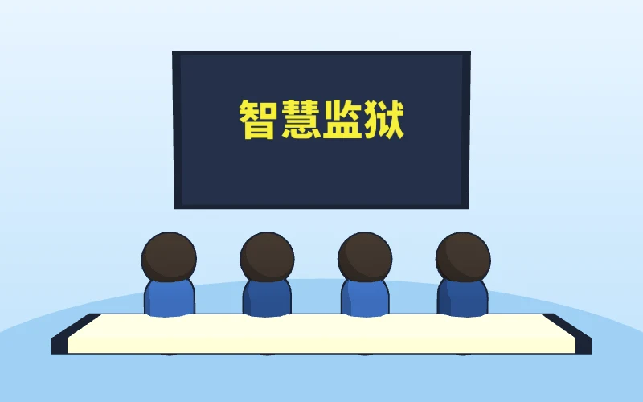
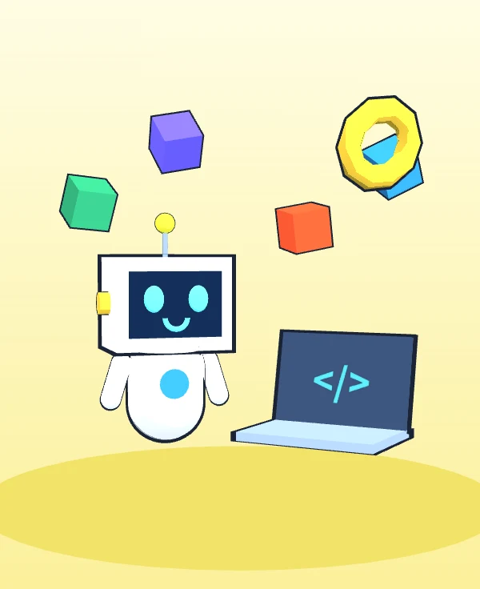
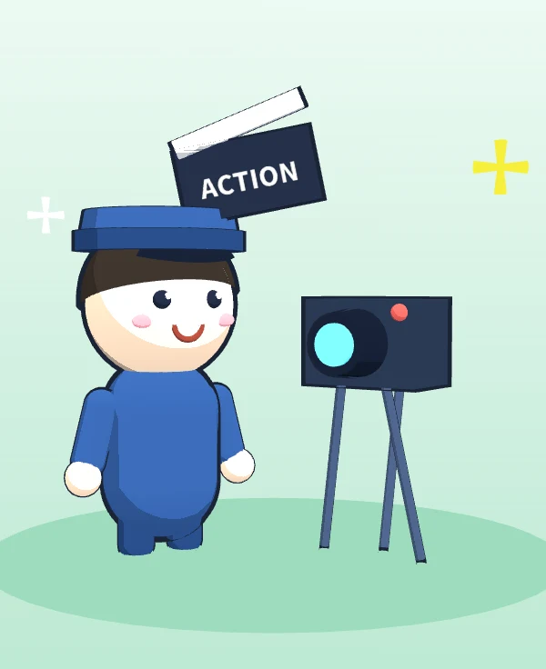
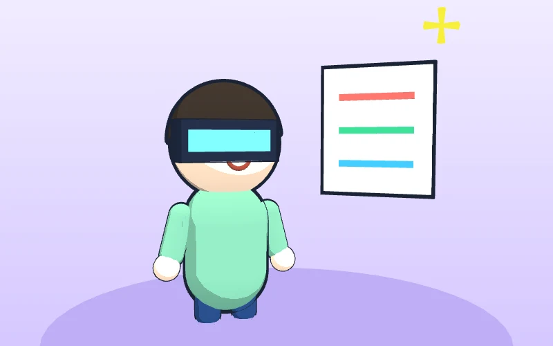
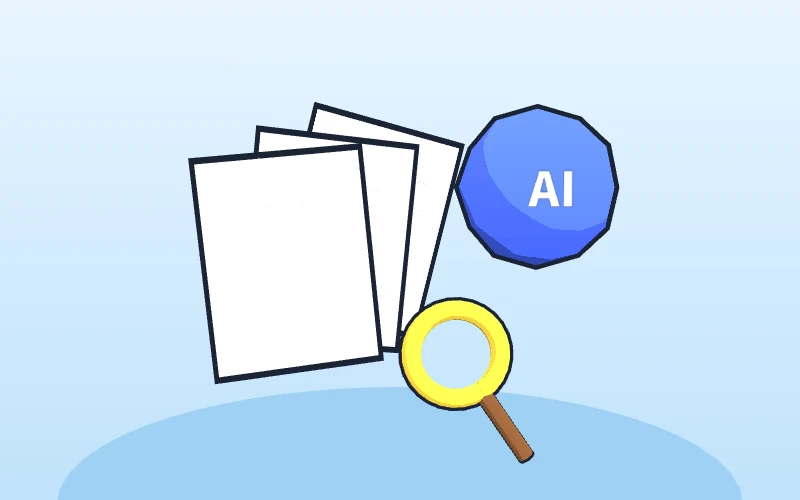

司法部召开“智慧监狱”建设工作推进会
全国各省（区、市）监狱管理局负责人和试点监狱监狱长齐聚杭州，实地察看浙江省乔司监狱的监控平台和夜间执勤点，并观看五个试点单位的智慧监狱业务应用展示。会议把智慧监狱定位为“数字法治、智慧司法”体系的组成部分。
启示技术进监所早已是方向，新警要做懂技术的使用者。
监所工作的人工智能新实践 · 新录用监狱人民警察专题培训



点击园区里的车间 → 屋顶掀开看内部 → 进入课件 | 键盘 ← → 切换车间，Esc 返回
点击时间线上的每个节点，看看 AI 能帮什么，又有哪些不能碰。
AI 是助手，不是警察。
它可以起草、归纳、陪练；
判断权、决定权、责任永远在人。
投票结果保存在你自己的手机上。现场汇总请以主讲人大屏为准。
开会、听讲座时打开录音，AI 自动转写成文字，再整理出要点、结论和待办。电脑端可以直接用语音输入写材料。
注意 只用于非涉密场合。涉密会议、监区内一律不录。
不只是聊天：你用一句话交代任务，它在电脑上一步步帮你做完，比如整理文件、写文档、汇总表格。常用流程可以存成技能反复用，人不在电脑前也能用微信远程下指令。
注意 只在个人办公电脑、非涉密文件上使用。单位内网和涉密计算机严禁安装。
它是怎么"想"的？现在能做到什么？哪些事它一定会出错？
它读过海量文本，学会了"什么词后面最可能接什么词"。它预测的是"像不像"，不是"对不对"，所以会一本正经地胡说。
用海量文本学习语言规律，相当于"上学"，花费巨大，几个月才完成一次。
你每次提问，它根据学到的规律，一个词一个词地"接龙"出回答。
遇到不知道的，它不会说"不知道"，而是编一个"看起来很像"的答案。
现行《中华人民共和国监狱法》共七章七十八条，根本没有第一百零八条。
上面的"条文"是编出来的。内容听起来合理，所以更危险。
现场演示：主讲人用自己的 AI 工具联网提问，看它是否会核实，或者也会编造。
达特茅斯会议首次提出"人工智能"一词。
计算机在国际象棋上战胜世界冠军，靠的是规则与算力。
神经网络在图像识别上大幅领先，人脸识别、语音识别开始实用。
AI 在围棋上战胜人类顶尖棋手。
今天几乎所有大模型的共同"地基"。
大模型走进普通人的生活，"对话式 AI"成为现实。
通义千问、文心一言、豆包、Kimi 等相继面向公众开放。
DeepSeek-R1 等推理模型出现，AI 开始"先思考再回答"，并能调用工具办事。
智能体进入办公、多模态与视频生成普及。从"会对话"走向"能干活"。
← 左右滑动查看 →
成熟度为主讲人评估的示意，用于说明"哪些能放心用、哪些还要多看一眼"。
工作用途优先选用国产、正规渠道的工具；任何工具都适用第二讲的纪律。
空话套话，换谁都能用，等于没写。
以下均为公开报道的真实案例，数据为相关单位或媒体公布，点击“来源”可查看原报道及配图。

全国各省（区、市）监狱管理局负责人和试点监狱监狱长齐聚杭州，实地察看浙江省乔司监狱的监控平台和夜间执勤点，并观看五个试点单位的智慧监狱业务应用展示。会议把智慧监狱定位为“数字法治、智慧司法”体系的组成部分。

戒毒人员戴上 VR 头盔观看模拟场景，系统同步记录眼动、皮肤电和脉搏，生成个性化的成瘾评估报告；智能心理云平台为每人建档，数据异常时发出预警。上海方面公布，戒毒人员出所后三年戒断率超过 27%。
浙江四个强制隔离戒毒所设立 VR 室，与科技企业联合研发虚拟现实戒毒系统。据报道，测试有效样本 1008 例，人均接受 6 次治疗；单位公布的对甲基苯丙胺成瘾治疗有效率为 73.6%。

湛江市司法局把 DeepSeek 接入本局大模型体系，用于行政复议申请分类、法规判例检索和文书草拟。滨州市沾化区司法局的做法更值得新警学习：先隐去隐私信息，再把决定书草稿交给 AI 审查，最后与人工结果比对、修改。
静海区人民检察院在本院服务器上本地部署 DeepSeek-R1-70B 模型，结合本院办案数据训练，在危险驾驶等案件中生成参考区间，供检察官研判，并建立了公文写作等数据库。
英国司法部宣布在监狱中使用 AI 工具：根据年龄、在押期间的暴力记录等因素评估风险，帮助工作人员提前干预；另一工具分析从在押人员处缴获的手机，已扫描约 860 万条信息，标记可能涉及犯罪的内容。
先学规矩，再学用法。下面每一条，都比任何技巧重要。
服刑人员、戒毒人员、家属、同事的姓名、编号、身份证号、照片、案情、档案，一个字都不发给 AI。
警力部署、值班安排、监控点位、监区布局、狱情动态、应急预案，一律不上网。
涉密文件、内部通知、工作秘密，不拍照、不上传、不让 AI 总结。
📵 手机不进监区：按规定存放，不在监管区域使用任何 AI。
🔌 不交叉连接：内网设备不接公网，U 盘不在内外网之间混用。
🏢 内网 AI 由单位统一部署：个人不得私自安装、接入。
AI 给的是草稿，不是结论。
以官方发布的法规文本为准。
谁署名，谁负责。
能不能用，先问领导和保密部门。
每个场景都按同一个结构讲：痛点 → 提示词模板 → 人工把关点。模板可以一键复制，课后直接用。
新警最怕"不知道怎么开口"。让 AI 扮演不同类型的谈话对象，反复练、反复改，再到真实岗位上去用。以下对话为虚构演示，现场主讲人会用真实 AI 工具和学员对练。
输入主题和对象，AI 生成 15 分钟讲稿、案例和互动问题。
AI 生成插图、出 PPT 大纲；案例必须用公开的、已裁判的典型案例。
一键生成选择题和判断题，附答案解析，检验教育效果。
聊天机器人"有问必答"，智能体"有事能办"。今天演示用 Claude / Codex 这类 AI 编程工具，把一个监所需求变成一个能用的智能体应用。
不用会编程：把需求写清楚，交给 AI 编程工具去写代码。下面是开发过程的动画还原，现场主讲人会在电脑上实际操作一遍。
AI 会把文档切成小段、建立索引。提问时先检索相关条文，再让大模型依据条文回答，并给出出处。
法规学习、考试刷题、谈话陪练、写作润色、普法脚本。知识库只用公开资料，输入的内容不含任何工作秘密。
计分考核辅助、狱情分析、档案检索等，必须由单位统一规划，在内网私有化部署，经保密审查后使用。个人不得自行开发接入。
普法宣传、警营文化、新警风采、教育微课都用得上。以一条 60 秒竖屏短视频为例，走完六步。
左侧是样片的分镜动画预览。把成片文件命名为 demo.mp4 放进 assets 文件夹，这里会自动换成真实视频。
服刑人员、戒毒人员不出镜，不出现可识别特征。
监区内部、设施布局、监控设备不入画面。
AI 生成的画面、声音须按规定显著标识。
以单位名义发布的内容，须经宣传部门审核。
视频行为分析、智能点名、周界防范……AI 会越来越多地出现在监管工作中。但无论技术怎么发展，这个闭环不会变：
⚠️ 误报和漏报必然存在：AI 提示只是线索，不是结论。
⚖️ 警惕算法偏见：风险评分不能直接替代人的判断和法定程序。
🛡️ 责任不转移：用了 AI，责任仍在使用它的民警和单位。